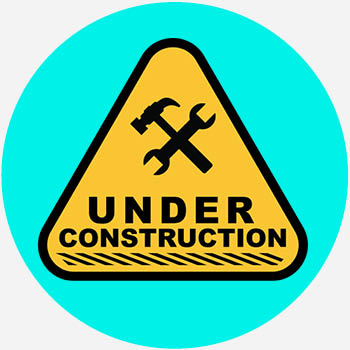

Stille Maschinen
Essay über verlorene Handwerkskunst und das Ende mechanischer Poesie
Vor nicht allzu langer Zeit surrten Räder und Riemen leise wie Atmung in Werkhallen. Die Hände, die sie verstanden, kannten Namen für jeden Ton einer Maschine. Heute stehen viele Werkstätten leer; die Maschinen ruhen wie Tiere in Winterschlaf.
Dieser Text folgt den letzten Spuren einer alten Drechselbank, erzählt von der Frau, die noch Holz wählt, dem Mann, der eine Feder repariert, und dem Kind, das zum ersten Mal die Wärme einer frisch geschaffenen Holzoberfläche berührt.
Manchmal scheint es, als hörten Maschinen unser Schweigen — und wir sollten ihnen zuhören, bevor auch ihre Stimmen vergehen.
© Midnight Chronicle — Vollversion für Unterstützer.